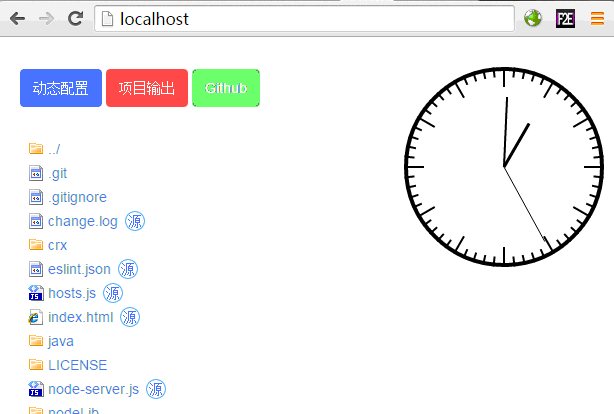

$belong[layout.vm]

<section class="container row">
    <div class="col-md-3">
        <div id="sidebar" class="my_sidebar">
            <ul class="nav">
                <li class="sidebar_head_li"><a href="#install-nodejs">Node.js安装</a></li>
                <li class="sidebar_head_li"><a href="#install-server">f2e-server安装</a></li>
                <li class="sidebar_head_li"><a href="#start-server">启动f2e-server</a></li>
                <li class="sidebar_head_li"><a href="#my-project">项目根目录配置</a></li>
            </ul>
        </div>
    </div>

    <div class="page_content col-md-9" role="main">
        <section id="install-nodejs">
            <h2>Node.js安装</h2>
            <p>f2e-server 基于Node.js环境运行, 稳定依赖版本是v0.12.0。 请到 <a href="https://nodejs.org/" target="_blank">官方网站</a> 下载安装</p>
        </section>
        
        <section id="install-server">
            <h2>f2e-server安装</h2>
            <p>直接使用npm 安装（v1.8.2以后版本支持全局安装 npm install f2e-server -g）</p>
            <pre class="language-bash"><code>$ npm install f2e-server
f2e-server@1.4.9 node_modules\f2e-server
├── cssmin@0.4.3
├── mime@1.3.4
├── wfquery@0.1.0
├── formidable@1.0.17
├── underscore@1.8.2
└── uglify-js@2.4.17 (uglify-to-browserify@1.0.2, async@0.2.10, yargs@1.3.source-map@0.1.34)
</code></pre>
            <p>如果需要使用f2e-server的完整功能, 进入安装目录（注意全局安装的目录）</p>
            <pre class="language-bash"><code>$ cd node_modules/f2e-server/
$ npm install
f2e-server@1.4.9
├── coffee-script@1.9.1 node_modules\coffee-script
├── highlight@0.2.3 node_modules\highlight
├── markdown@0.5.0 node_modules\markdown
├── psd@2.0.0 node_modules\psd
├── jade@1.9.2 node_modules\jade
├── less@2.0.0 node_modules\less
├── freemarker.js@1.2.0 node_modules\freemarker.js
├── optipng-bin@2.0.4 node_modules\optipng-bin
└── jpegtran-bin@2.0.2 node_modules\jpegtran-bin
</code></pre>
        </section>

    
        <section id="start-server">
            <h2>启动f2e-server</h2>
            <p>启动服务器，请先确保本机80端口木有被Apache/IIS/代理等服务占用</p>
            <pre class="language-bash"><code>$ npm start
> f2e-server@1.4.9 start e:\node_modules\f2e-server
> node node-server.js explorer http://localhost
Server running at http://127.0.0.1:80   [localhost]
Server running at http://127.0.0.1:2850 [staticconf]
</code></pre>
            <p>如果使用全局安装, 可以在指定目录中直接使用 <code>$ f2eserver start</code> 启动项目</p>
            <p>
                服务启动 将自动打开本地默认浏览器 <code>explorer http://localhost</code> 如下 <br>
                <!--  -->
            </p>
            <p>
                <iframe src="http://static.f2e-server.com/" frameborder="0" style="width:100%;height:300px;"></iframe>
            </p>
        </section>

        <section id="my-project">
            <h2>项目根目录配置</h2>
            <p>服务启动后, 将在node_modules（全局安装启动， 同时在启动目录中生成）目录自动生成conf.js配置文件:</p>
            <pre class="language-javascript"><code>exports["localhost"] = {
    "root": "e:\\node_modules\\f2e-server\\",  //root 修改成自己的项目根目录
    "welcome": "",
    "notFound": "e:\\node_modules\\f2e-server\\nodeLib\\html\\404.html",
    "folder": "e:\\node_modules\\f2e-server\\nodeLib\\html\\folder.html",
    "handle": true,
    "include": "\\$include\\[[\"\\s]*([^\"\\s]+)[\"\\s]*\\]",
    "placeholder": "$[placeholder]",
    "belong": "\\$belong\\[[\"\\s]*([^\"\\s]+)[\"\\s]*\\]",
    "middleware": true,
    "debug": true,
    "fs_mod": true,
    "port": 80,
    "maxConnections": 1000,
    "runJs": true,
    "output": "c:\\output\\",
    "nginx-http-concat": true,
    "filter": {},
    "agent": {},
    "expires": 0
};</code></pre>
        <p>将root配置参数修改成自己本地想要索引的根目录路径 <code>"root": "d:\\html\\"</code> , 然后重启服务 （ <code><strong>ctrl + c</strong></code> 关闭运行进程 ）</p>
        <pre class="language-bash"><code>$ npm start
> f2e-server@1.4.9 start e:\node_modules\f2e-server
> node node-server.js explorer http://localhost
Server running at http://127.0.0.1:80   [localhost]
Server running at http://127.0.0.1:2850 [staticconf]
</code></pre>
    </section>
</div>
<div class="page_bottom col-md-9 pull-right">
    <a href="server.html" class="pull-right">下一节: WEB服务器</a>
</div>
</section>

